1. imageinfo
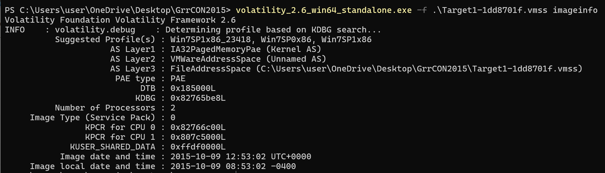
운영체제를 식별한다. (Suggested Profile(s) — Win7SP0x86 등)
2. pslist, psscan, pstree, psxview
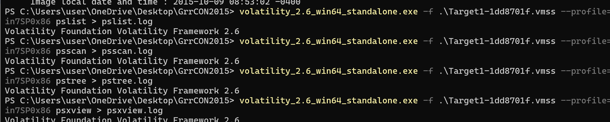
내용을 추출한다.
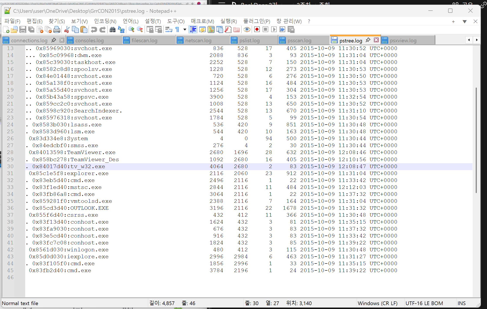
notepad++를 사용해 확인한다.
2-1. 의심 리스트 (pstree 참고)
| TeamViewer.exe | TeamViewer.exe와 아래 두 파일이 살짝 의심스러움 (TeamViewer 관련하여 악성코드가 돈다는 얘기가 있었음) |
|---|---|
| mstsc.exe | 원격으로 컴퓨터를 고칠 때 사용하는 프로세스! → 완전 의심 |
| explorer → cmd | explorer에서 cmd를 열었다 (흔한 일 아님) → 의심 |
| OUTLOOK.EXE | 메일 관련 소프트웨어. 메일 관련으로 악성코드가 많이 유포됨 → 의심 |
| iexplore → cmd | iexplore 하위에 cmd 실행 → 완전 의심 |
3. netscan
| netscan | 네트워크 연결 정보를 확인하는 명령어 |
|---|
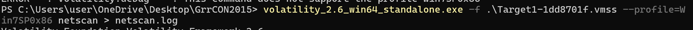
4. cmdline, cmdscan, consoles
| cmdscan | 콘솔에 입력한 값들을 실제로 볼 수 있음 |
|---|---|
| consoles | 콘솔에서 입력 & 출력한 값들을 실제로 볼 수 있음 |
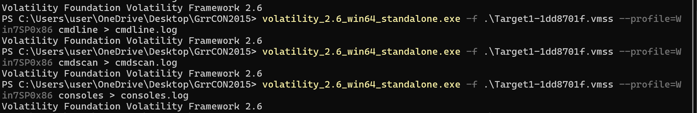
5. filescan, dumpfiles
5-1. filescan
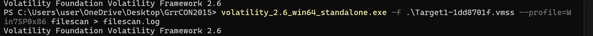
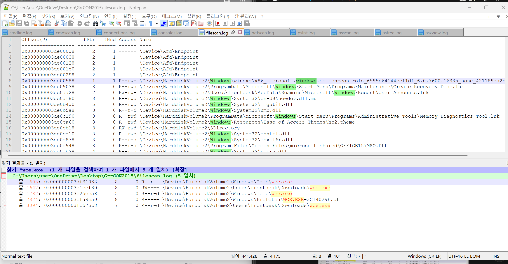
notepad++로 파일을 열고 wce.exe라는 단어를 찾는다.
6. 분석
💡 의심 리스트를 기반으로 분석을 시도한다.
6-1. pslist
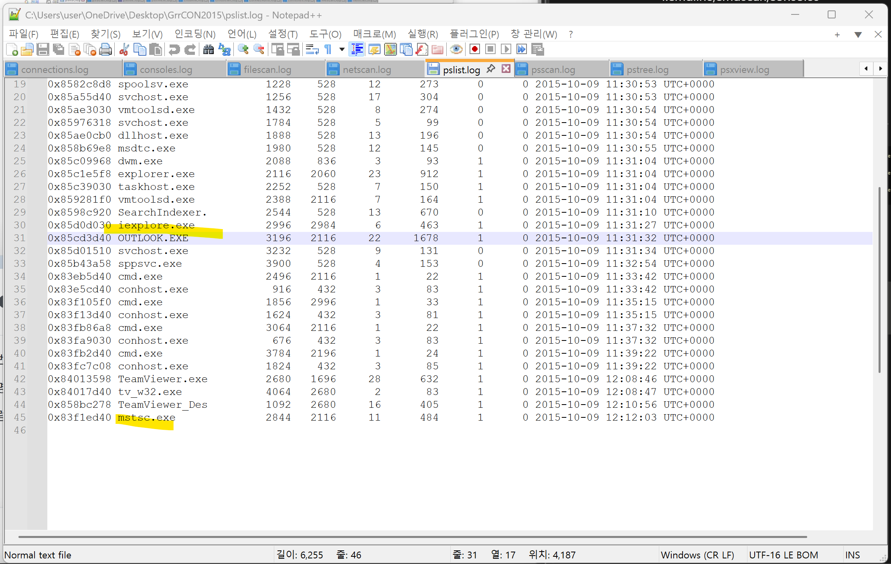
mstsc는 행위의 마지막일 것으로 예상! → 아웃룩부터 보기
6-2. cmdline
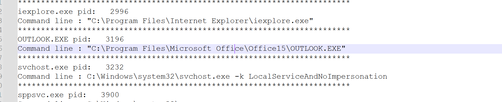
cmdline에서는 아웃룩 이상 무.
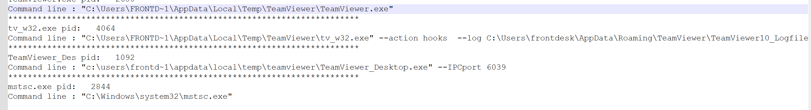
- 팀뷰어에 의심스러운 명령어들이 존재한다.
- → 팀뷰어 아래의
tv_w32.exe에 대해 확인한다.
6-3. file.None.0x85b684b0.w.tmp.dat
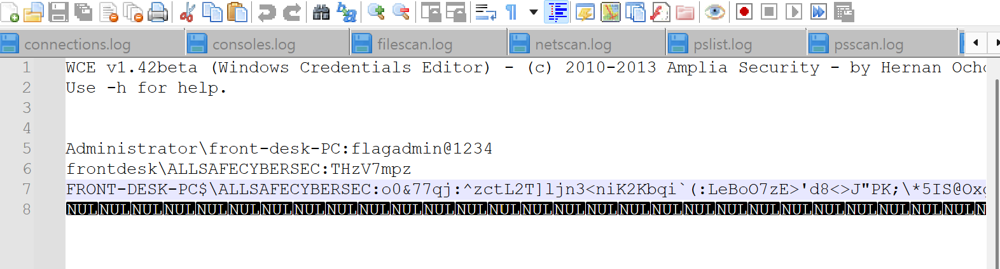
wce라는 프로그램이 해당 컴퓨터에 접속해 관리자와 일반 사용자 비밀번호를 알아내 w.tmp에 기록했다는 사실을 알 수 있다.
wce → 악성 프로세스 (VirusTotal에 넣어 확인!)
6-4. netscan
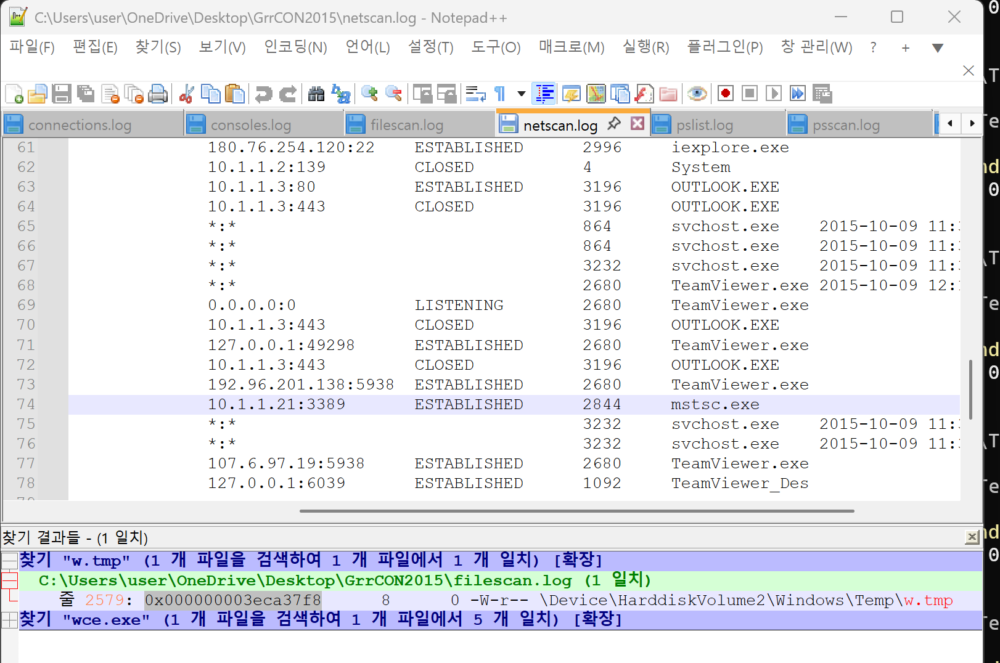
거의 확실한 악성 프로세스인 mstsc.exe의 주소는 해커의 주소일 것으로 판단한다.
| mstsc.exe | 10.1.1.21 (해커 주소로 추정) |
|---|---|
| iexplore.exe | 180.76.254.120 |
| TeamViewer.exe | 192.96.201.138 |
6-5. OUTLOOK.EXE
- 메일 → 메모리 덤프 → 메일 원본
- 메일의 경우 피싱 메일이 많다. → ‘여기를 클릭해 보세요 ~~ (url)’ 형식
- →
strings_3196.log파일에서http://찾기
- →
strings_3196.log 파일을 notepad++에서 연다.
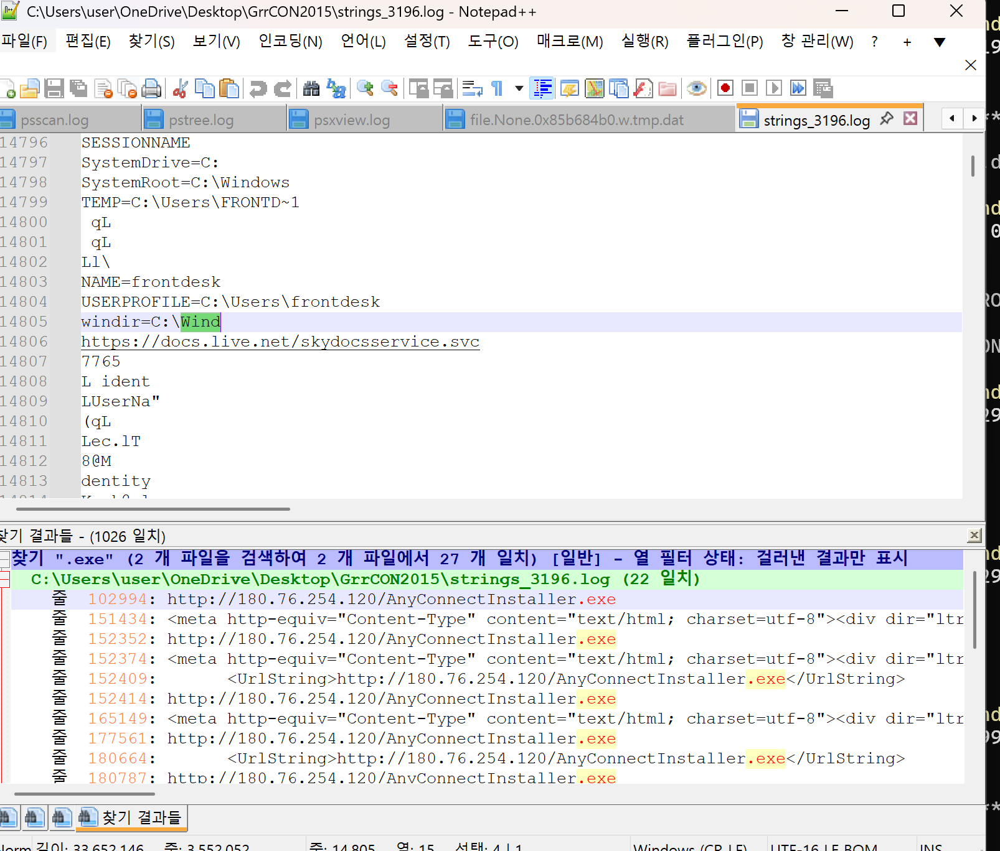
http://를 찾아봤을 때 결과값이 많음 → URL 끝에.exe가 있는 것으로 검색http://180.76.254.120/AnyConnectInstaller.exe— 이전에 봤던 주소 발견!
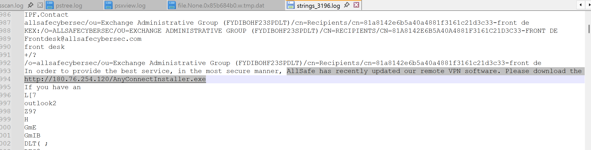
“Please download the update from the link below.
http://180.76.254.120/AnyConnectInstaller.exe”
6-6. AnyConnectInstaller.exe
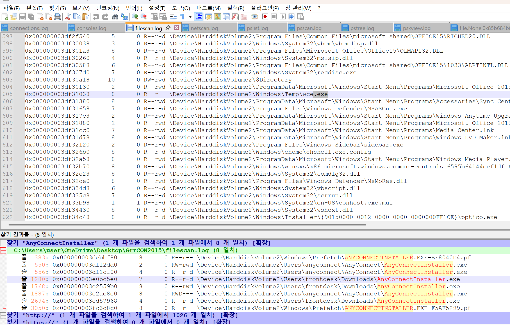
- 해당 파일을 filescan에서 찾기 → 다운로드 폴더 아래에 해당 파일이 있는 오프셋 복사 및 추출 (7번 참고)
- 결과는 악성코드로 판단
7. 메모리 덤프 & 파일 추출
7-1. 메모리 덤프
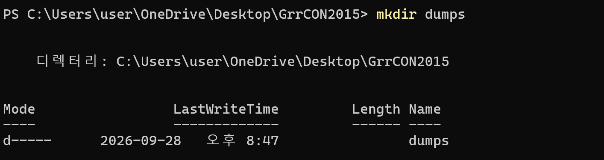
mkdir로 dumps 디렉터리를 생성한다.
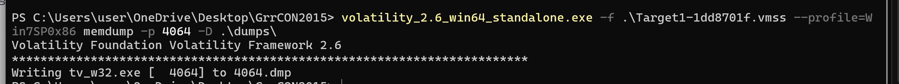
tv_w32.exe에 대해 메모리 덤프 (PID=4064)
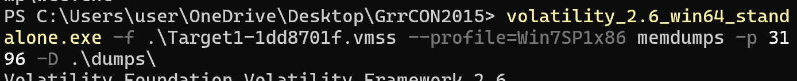
OUTLOOK.EXE에 대해 메모리 덤프 (memdumps 오타 → memdump O)
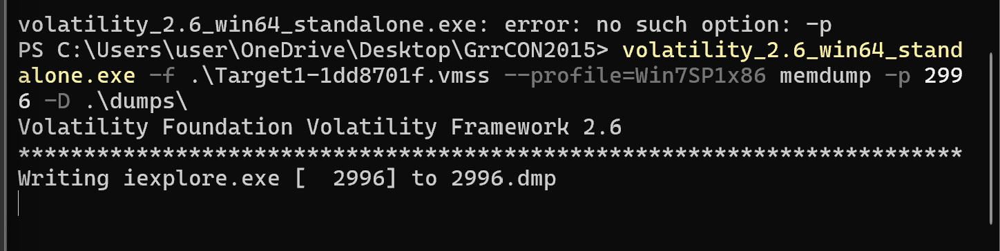
PID를 이용해 iexplore.exe에 대해 메모리 덤프
7-2. 파일 추출
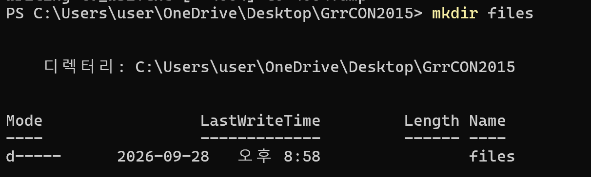
mkdir로 files 디렉터리를 생성한다.
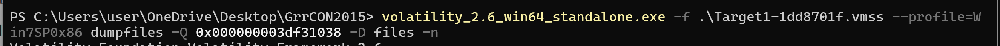
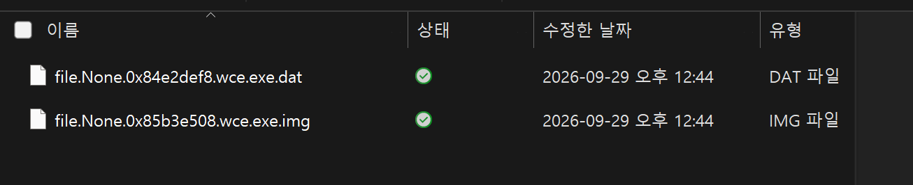
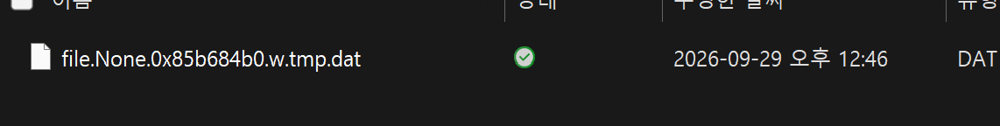
wce.exe와 w.tmp 추출
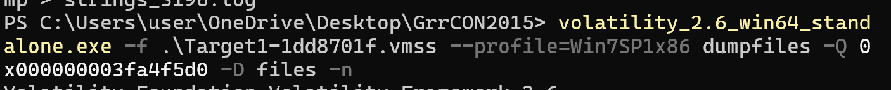
tv_w32.exe 추출 → VirusTotal에 넣어 봤을 때 의미 있는 결과값 없음
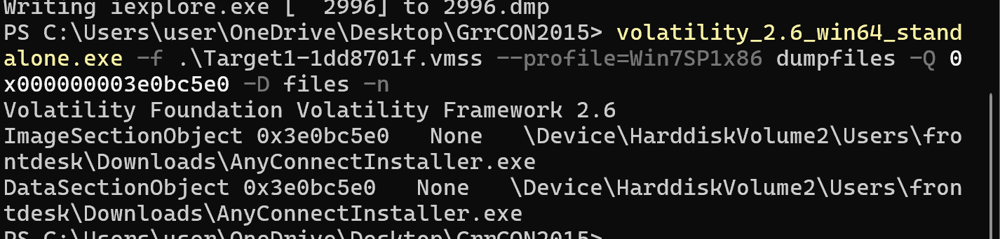
AnyConnectInstaller.exe 추출 → VirusTotal에 넣어 봤을 때 악성코드로 판단
8. 결론
8-1. 예상 시나리오
- 아웃룩 메일 — 악성코드를 심어서 보냄
- AnyConnectInstaller.exe — 설치받게 만듦
- wce.exe, w.tmp (관리자 패스워드) — 관리자 패스워드 획득
- mstsc.exe — 관리자 권한을 얻어 원격으로 무언가 시도